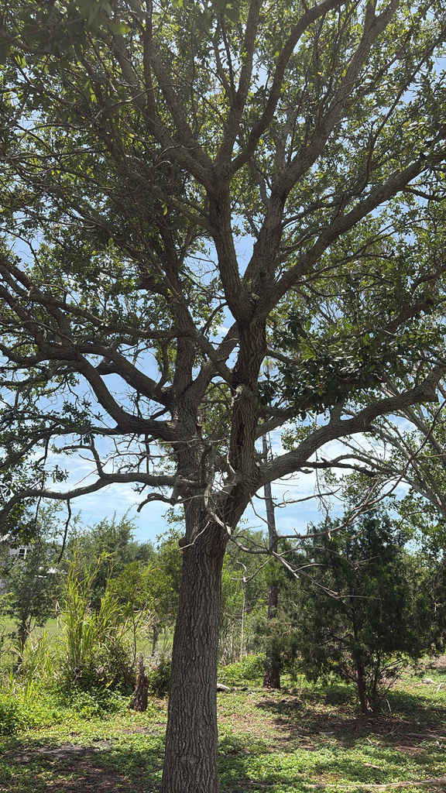

- One of Florida's three classic scrub oaks, and the one with the smallest leaves. In scrub habitat it regenerates from underground stems after fire — the above-ground plant burns, the root system survives, and new shoots emerge within weeks.
- The small, leathery, oval leaves with rolled-under margins are an adaptation to dry, exposed conditions — reducing water loss on the driest, sandiest soils in Florida.
- The abundant acorns are a crucial food source for Florida Scrub-Jays.
- Here at the park it grows outside its native scrub — a chance to see how a fire-adapted scrub oak takes shape in the gentler, more sheltered conditions of a garden than in the harsh white sand it evolved for.
Native to the southeastern coastal plain from South Carolina through Florida. Found almost exclusively in Florida's ancient scrub habitat — one of the most threatened ecosystems in the state. Member of Fagaceae — the oak family. Belongs to the red oak group.
- Myrtle Oak is a scrub specialist, meaning it evolved specifically for one of Florida's most extreme habitats: ancient, nutrient-poor, white sand scrub where most plants cannot survive and fire is the defining ecological process.
- In this habitat, the Myrtle Oak does not grow as a tree — it grows as a dense, sprawling shrub, often just a few feet tall, regenerating repeatedly from a deep root system that survives fire when the above-ground portions burn.
- This is why the same species can look so different from one place to the next. In regularly burned scrub, fire keeps it a stunted, multi-stemmed shrub. Spared from fire — as it is here at the park — that very same oak can stretch into a single-trunked small tree of thirty feet or more.
- The difference in form comes down almost entirely to how often it burns: a living lesson in how environment, not just genetics, sculpts a plant.
- Those slightly in-rolled (revolute) leaf margins are more than an ID trait — they are working machinery. By curling under, the edges help trap a thin layer of still, humid air against the leaf's underside, where the breathing pores (stomata) sit.
- That sheltered pocket buffers them from hot, drying winds and trims the plant's water loss — a small structural trick with real value on Florida's driest sands.
- The relationship with the Florida Scrub-Jay is one of the more well-documented plant-animal dependencies in Florida conservation. The Scrub-Jay caches acorns as its primary winter food source, burying them individually in the sand. Myrtle Oak acorns are among the most important in its diet. Without adequate acorn production from scrub oaks, Scrub-Jay populations decline.
- The reverse is also documented — Scrub-Jay caching behavior contributes to oak recruitment by burying seeds at the right depth and in suitable locations.
- Florida scrub is one of the most threatened habitats in the state, with an estimated 90% having been lost to development. The Scrub-Jay is listed as threatened. The Myrtle Oak, by contrast, is secure — but its security depends on the survival of the habitat.
The acorns are the primary wildlife value. Scrub-Jays, bluejays, and various other birds and small mammals eat and cache them. The dense, low canopy provides cover for scrub-adapted wildlife.
As a red-oak-group member, acorns mature in two years rather than one — a detail that affects when the food supply is available to wildlife.
Small, rounded, produced in good quantities. Mature in two years (red oak group). Critical food source for Florida Scrub-Jays and other wildlife.
Small (about ¾ inch to 2 inches long), oval to oblong, leathery, with margins that roll under slightly (revolute). Dark glossy green above, paler below. Evergreen. This rolled margin is a key ID feature distinguishing it from other small oaks.
Evergreen shrub to small tree, usually 5 to 20 feet in typical scrub conditions; can grow taller in protected settings. Multi-stemmed, dense, spreading.
Gray-brown, furrowed on older stems.
The small, leathery oval leaves with the characteristic rolled-under margins are the best year-round ID feature. Compare with the other oaks at the park — the leaf scale and texture are distinctive. It can be confused with the closely related Florida scrub oak (Quercus inopina) and Chapman's oak (Quercus chapmanii); the small, rolled-under leaves help separate it.
For dogs this is the one to watch: raw acorns and oak leaves contain tannins that can damage the kidneys if eaten in quantity, and the small acorns are easy to gulp in volume.
Keep dogs from grazing under the tree.
For people there's no known toxicity — the acorns are simply too bitter to eat without extensive tannin-leaching.

- © Randall Carter (CC-BY-NC), via iNaturalist